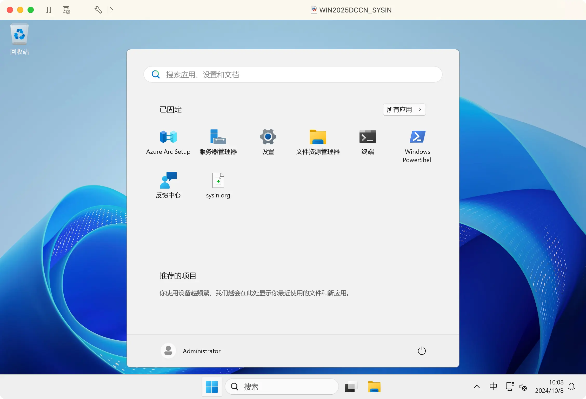
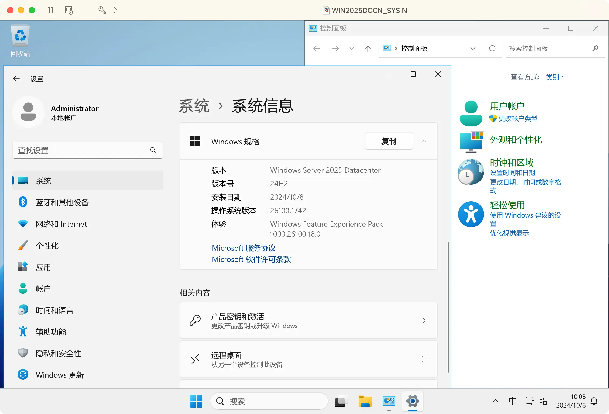

请访问原文链接：Windows Server 2025 中文版、英文版下载 (2026 年 8 月更新) 查看最新版。原创作品，转载请保留出处。
生活本不易，原创更不易。还请同行高抬贵手，尊重彼此的劳动成果。谢谢🙏
作者主页：sysin.org
产品概述
Microsoft Windows Server 2025 让你为将来做好准备，同时提供目前所需的安全性、性能和灵活性。通过更轻松的网络连接、更快的存储和满足你需求的混合云功能提高工作效率。凭借前瞻性的安全性和 AI 就绪型计算，领先于未来的发展。
一些关键改进包括：
- 混合：跨混合、云和边缘快速调整。更轻松地连接到 Azure Arc 以连接本地服务器和基于云的服务器。将 Azure 功能融入到本地服务器。
- 安全性：可阻止网络攻击的硬件和软件级安全性；可改进安全性和可伸缩性的下一代 Active Directory。启用定制的安全基线，并从一开始就配置偏移保护。
- 面向未来的新式平台：Windows Server 2025 现在可以更轻松地升级和缩放，同时具有前所未有的应用兼容性。Windows Server 2025 桌面提供一致的客户端和服务器 UI 体验 (sysin)，以及 WiFi 和蓝牙等便利功能。
- 性能：更快、更轻松的网络和存储；可减少故障时间的实时热修补操作；可在边缘进行推理的 GPU 分区。在基于闪存的存储方面做出了改进，让 Windows Server 成为更好的 SQL Server 平台。

配图：Unix 风格的任务栏和开始菜单
2024 年 11 月 3 日，微软宣布 Windows Server 2025 从 Build 26100.1742 开始正式发布 (generally available)。这是微软 Windows 服务器操作系统的最新版本，也是长期服务渠道 (LTSC) 版本。 因此，Windows Server 2025 的主流支持（Mainstream support）将持续近 10 年，直至 2029 年 10 月 9 日。扩展支持（Extended support）将持续到 2034 年 10 月 10 日。
了解 Windows Server 2025 中的新增功能。
| Windows Server version | Servicing option | Editions | Availability date | Latest build | Mainstream support end date | Extended support end date |
|---|---|---|---|---|---|---|
| Windows Server 2025 | Long-Term Servicing Channel (LTSC) | Datacenter, Standard | 2024-11-01 | 26100.1742 | 2029-10-09 | 2034-10-10 |
| Windows Server 2022 | Long-Term Servicing Channel (LTSC) | Datacenter, Standard | 2021-08-18 | 20348.2764 | 2026-10-13 | 2031-10-14 |
| Windows Server 2019 (version 1809) | Long-Term Servicing Channel (LTSC) | Datacenter, Standard | 2018-11-13 | 17763.6414 | 2024-01-09 | 2029-01-09 |
| Windows Server 2016 (version 1607) | Long-Term Servicing Branch (LTSB) | Datacenter, Essentials, Standard | 2016-08-02 | 14393.7428 | 2022-01-11 | 2027-01-12 |
我们知道 Windows Server 2022 仍然属于 Windows 10 Server 的范畴。现在，下一代基于 Windows 11 的 Windows Server 已经可以公开下载，根据 A3 的产品历史发行规律，基本上就是 Windows Server 2025（现已确定）。
直观体验：
- 启动 Logo 和系统 UI 都已经使用了 Windows 11 风格
- 早期产品名称显示为 Windows Server 2022，显然是正式名称尚未宣布（现在已经确定为 2025）
- 控制面板（盖茨风格）和设置（麦德龙风格）的混乱仍然传承 Windows 11，包括其 “库克风格” 三合一
- 除了界面风格，新增功能未知，发行说明和发行日期也未知（现已发布）

配图：麦德龙风格的设置与盖茨风格经典的控制面板并存
下载地址
本文仅提供官方安装介质的获取方式。评估版可免费试用 180 天，仅供测试、学习和研究用途，请勿用于生产环境。
Windows Server 2025 LTSC 简体中文版、繁体中文版、英文版 (RTM Sep 2024)：
- 百度网盘链接：https://pan.baidu.com/s/13uE1ZzX-Kf3Vjzf1u0MXuw?pwd=j5ew
- X23-81954_26100.1742.240906-0331.ge_release_svc_refresh_SERVER_OEMRET_x64FRE_en-us.iso
- X23-81954_26100.1742.240906-0331.ge_release_svc_refresh_SERVER_OEMRET_x64FRE_zh-cn.iso
- X23-81954_26100.1742.240906-0331.ge_release_svc_refresh_SERVER_OEMRET_x64FRE_zh-tw.iso
Windows Server 2025 LTSC 简体中文版、繁体中文版、英文版 (released Nov 2024)：
VSS Version 百度网盘链接：https://pan.baidu.com/s/1QKXv4_q9i3wCZN8QHtME9w?pwd=env4
- en-us_windows_server_2025_x64_dvd_b7ec10f3s.iso
- zh-cn_windows_server_2025_x64_dvd_1d93dd12s.iso
- zh-tw_windows_server_2025_x64_dvd_6d2c01e3s.iso
MAC Version 百度网盘链接：https://pan.baidu.com/s/1pYS8OG2Pos1iaaTPld2z4A?pwd=xw6s
- SW_DVD9_Win_ServeCr_STD_CORE_2025_24H2_64Bit_English_DC_STD_MLF_X23-81891S.ISO
- SW_DVD9_Win_Server_STD_CORE_2025_24H2_64Bit_ChnSimp_DC_STD_MLF_X23-81887S.ISO
- SW_DVD9_Win_Server_STD_CORE_2025_24H2_64Bit_ChnTrad_DC_STD_MLF_X23-81888S.ISO
Windows Server 2025 Languages and Optional Features
- 百度网盘链接：https://pan.baidu.com/s/1CAMPHfdNXZYc4i7kK5wurA?pwd=gcsm
- mul_languages_and_optional_features_for_windows_server_2025_x64_dvd_762b4771.iso
Windows Server 2025 LTSC 简体中文版、繁体中文版、英文版 (updated Nov 2024)：
- VSS Version 百度网盘链接：https://pan.baidu.com/s/1JtFy_6E3B93YSRyIrlTY7g?pwd=s7rv
- MAC Version 百度网盘链接：https://pan.baidu.com/s/1N8a8C6RuoN2uajKeKr3CAg?pwd=8pd6
Windows Server 2025 LTSC 简体中文版、繁体中文版、英文版 (updated Dec 2024)：
- MAC Version 百度网盘链接：https://pan.baidu.com/s/1rGujWNFh26fwS5tWty46Ug?pwd=y7ps
Windows Server 2025 LTSC 简体中文版、繁体中文版、英文版 (updated Jan 2025)：
- VSS Version 百度网盘链接：https://pan.baidu.com/s/17Cz5j2pqXJdCQzjSTqL0eg?pwd=g2ky
- MAC Version 百度网盘链接：https://pan.baidu.com/s/1IaQkE38yTS-ELTh02Pp2WA?pwd=mw27
Windows Server 2025 LTSC 简体中文版、繁体中文版、英文版 (updated Feb 2025)：
- VSS Version 百度网盘链接：https://pan.baidu.com/s/1cHVL_jX8JrpPd66DVvQlPA?pwd=wd9u
Windows Server 2025 LTSC 简体中文版、繁体中文版、英文版 (updated Mar 2025)：
- VSS Version 百度网盘链接：https://pan.baidu.com/s/13aGpDqgmzCsfs-3xg80cLA?pwd=bwmq
Windows Server 2025 LTSC 简体中文版、繁体中文版、英文版 (updated Apr 2025)：
- VSS Version 百度网盘链接：https://pan.baidu.com/s/13cbp9Q_tTOiboTrQSW78Ng?pwd=zeub
- MAC Version 百度网盘链接：https://pan.baidu.com/s/169L-DSnwcdUmYctQ7Lqv6w?pwd=ant9
Windows Server 2025 LTSC 简体中文版、繁体中文版、英文版 (updated May 2025)：
- VSS Version 百度网盘链接：https://pan.baidu.com/s/172_SnXlq6KFsUU_ZCefLhw?pwd=jtk2
- MAC Version 百度网盘链接：https://pan.baidu.com/s/1FiEBI0VE9hwR68nlEDigzg?pwd=g7re
Windows Server 2025 LTSC 简体中文版、繁体中文版、英文版 (updated Jun 2025)：
- VSS Version 百度网盘链接：https://pan.baidu.com/s/1lVDMpsgdBSU-wUUJN7sXBg?pwd=ahyi
Windows Server 2025 LTSC 简体中文版、繁体中文版、英文版 (updated July 2025)：
- VSS Version 百度网盘链接：https://pan.baidu.com/s/1QSgpT4toffMVshZVSGTanw?pwd=qrc2
Windows Server 2025 LTSC 简体中文版、繁体中文版、英文版 (updated Aug 2025)：
- VSS Version 百度网盘链接：https://pan.baidu.com/s/14K3oH5EsP6Moc9cOQPQ6Og?pwd=6euu
Windows Server 2025 LTSC 简体中文版、繁体中文版、英文版 (updated Sep 2025)：
- VSS Version 百度网盘链接：https://pan.baidu.com/s/1M_d9dsSM7FV9XKgl68Yalw?pwd=cba3
- MAC Version 百度网盘链接：https://pan.baidu.com/s/1oXk1kWVY-p7zf1z-bDt8oQ?pwd=8bis
Windows Server 2025 LTSC 简体中文版、繁体中文版、英文版 (updated Oct 2025)：
- VSS Version 百度网盘链接：https://pan.baidu.com/s/1PQh-XWmagtCKcEyaDRaUGg?pwd=sdba
Windows Server 2025 LTSC 简体中文版、繁体中文版、英文版 (updated Nov 2025)：
- VSS Version 百度网盘链接：https://pan.baidu.com/s/1uSqxuLYVjvZszGVcLqM2_g?pwd=34at
Windows Server 2025 LTSC 简体中文版、繁体中文版、英文版 (updated Dec 2025)：
- VSS Version 百度网盘链接：https://pan.baidu.com/s/1lWNRsBbAF4ToEM4gU74Ihw?pwd=68u6
Windows Server 2025 LTSC 简体中文版、繁体中文版、英文版 (updated Jan 2026)：
- VSS Version 百度网盘链接：https://pan.baidu.com/s/1uv24Ph5fOafxuslAYEgd-g?pwd=p5dz
Windows Server 2025 LTSC 简体中文版、繁体中文版、英文版 (updated Feb 2026)：
- VSS Version 百度网盘链接：https://pan.baidu.com/s/10r9HkbeTB4p477EpXHE5ig?pwd=81mg
Windows Server 2025 LTSC 简体中文版、繁体中文版、英文版 (updated Mar 2026)：
- VSS Version 百度网盘链接：https://pan.baidu.com/s/1agCuMWjbB2ZMgFvua2rNmQ?pwd=8n29
Windows Server 2025 LTSC 简体中文版、繁体中文版、英文版 (Updated Apr 2026)：
- VSS Version 百度网盘链接：https://pan.baidu.com/s/1q11XQaW2tQ4U70tXzhPlcQ?pwd=usf9
Windows Server 2025 LTSC 简体中文版、繁体中文版、英文版 (Updated May 2026)：
- VSS Version 百度网盘链接：https://pan.baidu.com/s/1Lx3-4l1Q6ZnxAh8t2ewSSA?pwd=v4j6
Windows Server 2025 LTSC 简体中文版、繁体中文版、英文版 (Updated Jun 2026)：
- VSS Version 百度网盘链接：https://pan.baidu.com/s/1iWsyiJB-qiZCXZe2i0SbJg?pwd=mhrq
- en-us_windows_server_2025_updated_june_2026_x64_dvd_a2d68429.iso
- zh-cn_windows_server_2025_updated_june_2026_x64_dvd_a2d68429.iso
- zh-tw_windows_server_2025_updated_june_2026_x64_dvd_a2d68429.iso
Windows Server 2025 LTSC 简体中文版、繁体中文版、英文版 (Updated Jul 2026)：
- VSS Version 百度网盘链接：https://pan.baidu.com/s/1ZPl_f9Z1e4ziO9VCo8uWDQ?pwd=km4h
- en-us_windows_server_2025_updated_july_2026_x64_dvd_4e6f5a42.iso
- zh-cn_windows_server_2025_updated_july_2026_x64_dvd_4e6f5a42.iso
- zh-tw_windows_server_2025_updated_july_2026_x64_dvd_4e6f5a42.iso
Windows Server 2025 LTSC 简体中文版、繁体中文版、英文版 (Updated Aug 2026)：
- VSS Version 百度网盘链接：https://pan.baidu.com/s/1vh7Vc84JCpEpVx2gqdE5jg?pwd=fatb
- en-us_windows_server_2025_updated_aug_2026_x64_dvd_b0833651.iso
- zh-cn_windows_server_2025_updated_aug_2026_x64_dvd_b0833651.iso
- zh-tw_windows_server_2025_updated_aug_2026_x64_dvd_b0833651.iso
本文仅提供安装介质的获取方式。评估版可免费试用 180 天，仅供测试、学习和研究用途，请勿用于生产环境。
虚机模板下载：
更多：Windows 下载汇总

文章用于推荐和分享优秀的软件产品及其相关技术，所有软件提供免费版或试用版。内容若侵犯了您的版权，请联系作者删除。如果您喜欢这篇文章，或者觉得它对您有所帮助，亦或发现有不当之处；欢迎发表评论，也欢迎分享这个网站，或者赞赏一下，谢谢！提示：捐赠或赞赏属于自愿赠予行为，提交后即表示您对作者的支持与认可。为避免误操作，请在确认前仔细检查金额，支付完成后将无法撤销或退还。
 支付宝赞赏
支付宝赞赏  微信赞赏
微信赞赏赞赏一下
敬请注册！点击 “登录” - “用户注册”（已知不支持 21.cn/189.cn 邮箱）。 请勿使用联合登录（已关闭）。